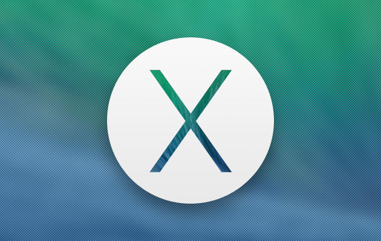
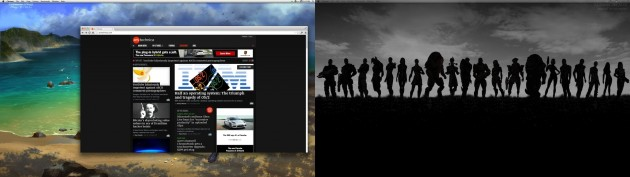
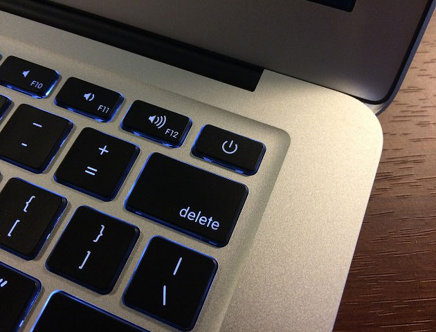
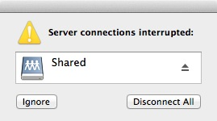

Анализ OS X Mavericks |
|
С мнением редакции ArsTechnica сложно спорить: свежая версия «яблочной» операционки в самом деле получилась очень хорошей. Хотя система не без изъянов. В большинстве случаев все работает без сучка и задоринки, но за время плотной работы с «Мавериксом» там и сям возникают мелкие, но досадные глюки, которые смазывают общее положительное впечатление о продукте.  1. Прокрутка не такая уж и плавная Когда функция превентивной прокрутки работает, как задумано, блоки контента в окне программы прорисовываются еще до того, как они появляются на экране. Поэтому прокрутка происходит быстро и плавно. В программах, которые поддерживают эту функцию, — таких, как Tweetbot, например, прокрутка происходит очень плавно. А вот в других приложениях, увы, все не так приятно. Проблема частенько наблюдается, в частности, в браузере Chrome, в «офисном» органайзере Outlook 2011 и IRC-клиенте Limechat: медленная прокрутка нареканий не вызывает, но стоит крутануть скроллер резче — и начинаются рывки и задержки. Причем все это происходит на 27-дюймовом Аймаке 2012 года выпуска с видеокартой на базе чипа GeForce GTX 680MX и 2 ГБ видеопамяти — то есть технические характеристики компьютера не могут быть причиной. Кстати говоря, и в Tweetbot были те же проблемы с прокруткой, пока программу не обновили до версии 1.4. 2. Многомониторное безумие Это очевидный момент: в OS X поддержка нескольких мониторов давно нуждалась в существенной доработке. Особенно эта нужда обострилась во «Льве», где был введен полноэкранный режим работы приложений, который в каждый момент времени позволял использовать только один монитор, вне зависимости от того, сколько их всего подключено к машине. В Mavericks ситуация выровнялась, хоть ухудшать ее в общем-то было и некуда. Но вот какие «косяки» выявил старший обозреватель «АрсТехники» Ли Хатчинсон.  С окнами не происходит ничего необычного, пока они находятся на одном мониторе…
…но окна не будут разделяться на разные экраны, пока вы не отключите улучшения полноэкранного режима. Одной из главных проблем стало то, что некоторые приложения не запоминают положение своих окон. Допустим, привязали Outlook, Tweetbot или Adium к правому экрану трехдисплейной системы, потом закрыли эти приложения; запустили их вновь — и они появляются на центральном экране. Или еще вариант: само приложение остается на том экране, к которому его привязали, а диалоговые окна этой же программы всплывают на другом экране. Особенно удобно так работать с окнами для ввода пароля: где оно всплывет — сложно предугадать. Похожая свистопляска и с файлами, которые перетаскиваются на рабочий стол: опускаешь объект на одном экране — а он внезапно оказывается на другом экране, под ворохом открытых окон. После этого приходится повторять процедуру и надеяться, что данные снова никуда не убегут. С панелью Dock тоже не все так гладко: перейдя на какой-нибудь из второстепенных дисплеев, на главном панель может уже не появиться, сколько ни тыкай в нижнюю кромку экрана. Не менее обидно и то, что пользователю приходится выбирать между двумя полноэкранными режимами: либо тот, что позволяет растягивать окна приложений на несколько экранов, либо тот, который позволяет использовать несколько дисплеев независимо друг от друга. Такие дела. 3. Проблемы с кнопкой питания. Наличие этой проблемы зависит от того, какой моделью Макбука вы владеете. На более поздних MacBook Air и MacBook Pro с дисплеем Retina кнопка питания располагается на месте клавиши выброса оптического диска — прямо над клавишей delete. Скажем, при удалении текста можно запросто нажать на кнопку питания. И в прошлых версиях OS X после этого появлялся диалог выбора действия: отключить, отправить в спящий режим или перезагрузить. Нажатием клавиши esc это окно скрывалось, и можно было продолжать работу.  А сколько раз вы случайно нажимали кнопку питания? Очень раздражает. Теперь же по нажатию на кнопку питания Макбук сразу отправляется в спящий режим, безо всяких вопросов. Главное, что действие кнопки никак не перенастроить. Многие маководы теперь мучаются: каждый раз после случайного нажатия на кнопку питания приходится тратить несколько секунд, чтобы привести компьютер обратно в рабочую готовность. 4. Заскоки работы с сетевыми ресурсами  Последней проблемой в списке ArsTechnica является работа с сетевыми ресурсами. Этот «косяк» не возник в Mavericks, но и сейчас доставляет опытным пользователям много «радости». Как и ее предшественники, новая OS X сходит с ума, если сетевой ресурс отключить без его отмонтирования. Перезагружается сервер или на вашем Маке «упало» сетевое соединение — при обращении к сбоившему сетевому ресурсу на экране появляется вечный «пляжный мячик».
|